“Haydi KTÜ'yü Sen İfade Et!” slogan yarışmasının sonucunda kazananlar belli oldu. Türkiye genelinden toplamda 888 adayın katıldığı bu heyecan verici süreçte, birbirinden yaratıcı ve etkileyici sloganlar arasından ilk üç slogan belirlendi. Jüri Heyeti tarafından titizlikle incelenen sloganlar, gelecekte üniversitemizin tanıtım ve iletişim faaliyetlerinde önemli bir rol oynayacak.
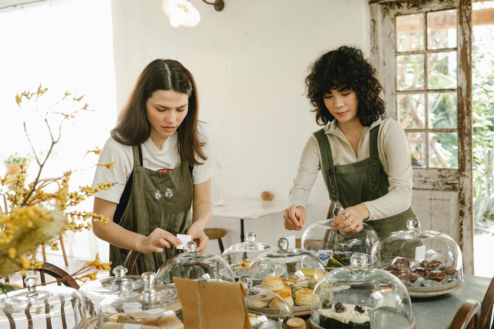
09.05.2024 tarihinde 08:30-15:30 saatleri arasında Merkez Kanuni Kampüsü fakülteler hattı bulvar boyunca çift yönlü refüjler ve yaya yolları çevresinde motorlu tırpan ile çevre temizliği yapılacağından belirtilen yol güzergahına araç park edilmemesi hususunda bilgilerinizi rica ederiz.
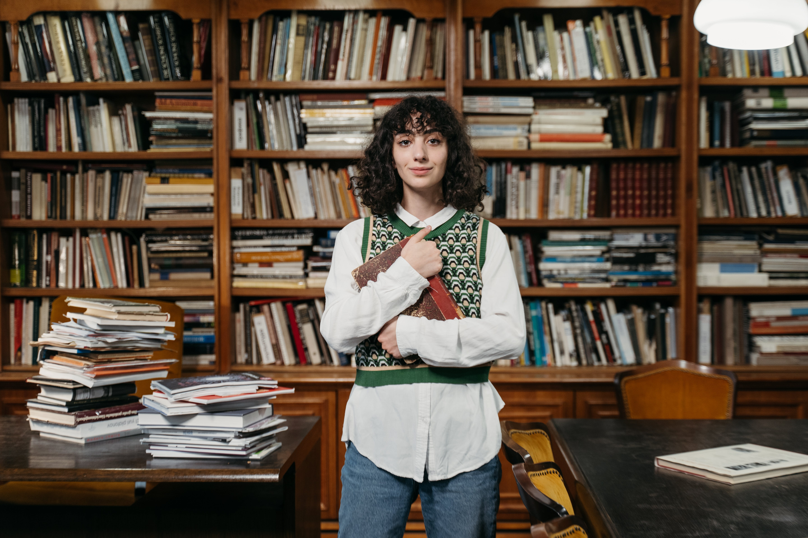
35 ve 36 nolu lojmanlarda 27.04.2024 tarihinde 10.00-11.00 saatleri arasında su kesintisi olacaktır.
Yetenek Havuzu+ programına 06.05.2024 - 07.05.2024 tarihleri arasında 96 personelimiz tarafından başvuru yapılmıştır. Bu başvurular ilan edilen ön koşullar bakımından kontrol edilmiş olup 72 personelimizin başvurusu olumlu sonuçlanarak ilgili programa katılabileceği tespit edilmiştir. Geriye kalan 24 personelimizin ön koşullardan en az bir tanesini sağlayamamasından dolayı olumsuz sonuçlanarak programa katılamayacağı tespit edilmiştir.
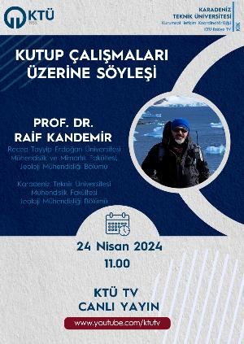
Prof. Dr. Raif Kandemir canlı yayın konuğumuz olacaktır.
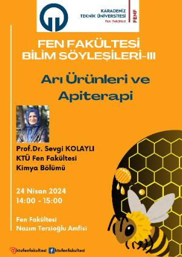
Fen Fakültesi Bilim Söyleşilerinin üçüncüsü olan Arı Ürünleri ve Apiterapi adlı söyleşi Fakültemiz Kimya Bölümü öğretim üyelerinden Prof.Dr. Sevgi KOLAYLI tarafından 24 Nisan 2024 Çarşamba günü saat 14.00’te Fakültemiz Nazım Terzioğlu amfisinde gerçekleştirilecektir.
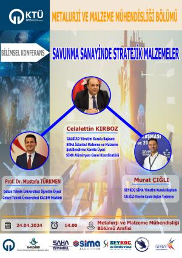
24.04.2024 Çarşamba günü saat 14:00'da KTÜ Mühendislik Fakültesi Metalurji ve Malzeme Mühendisliği Bölümü tarafından organize edilen "Savunma Sanayinde Stratejik Malzemeler" isimli bilimsel konferans gerçekleştirilecektir...
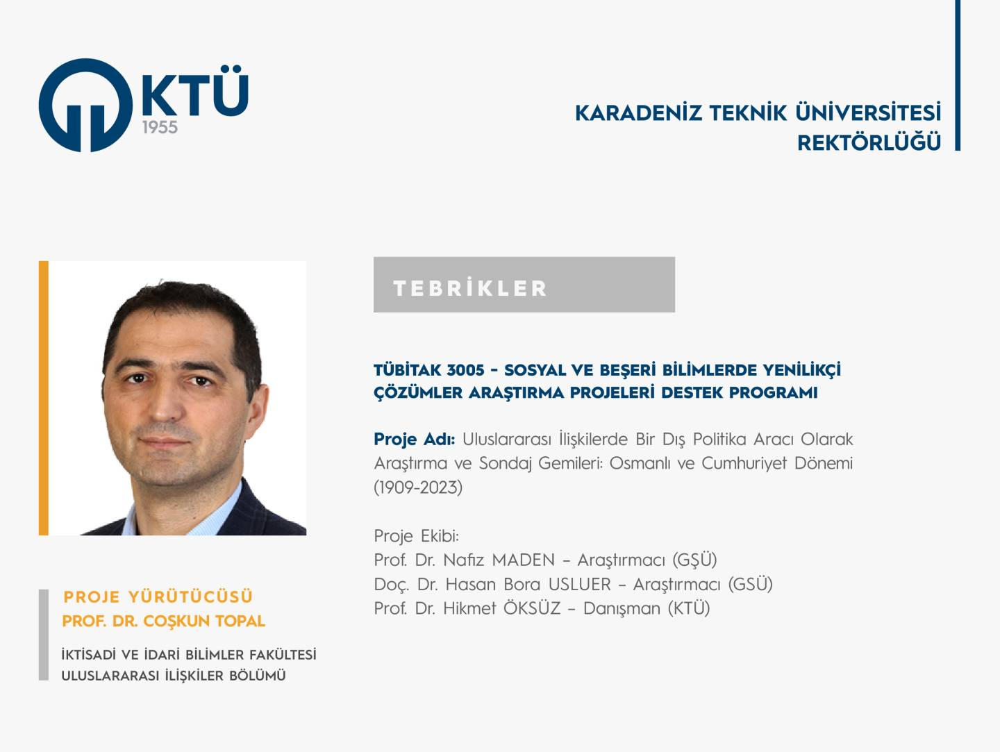
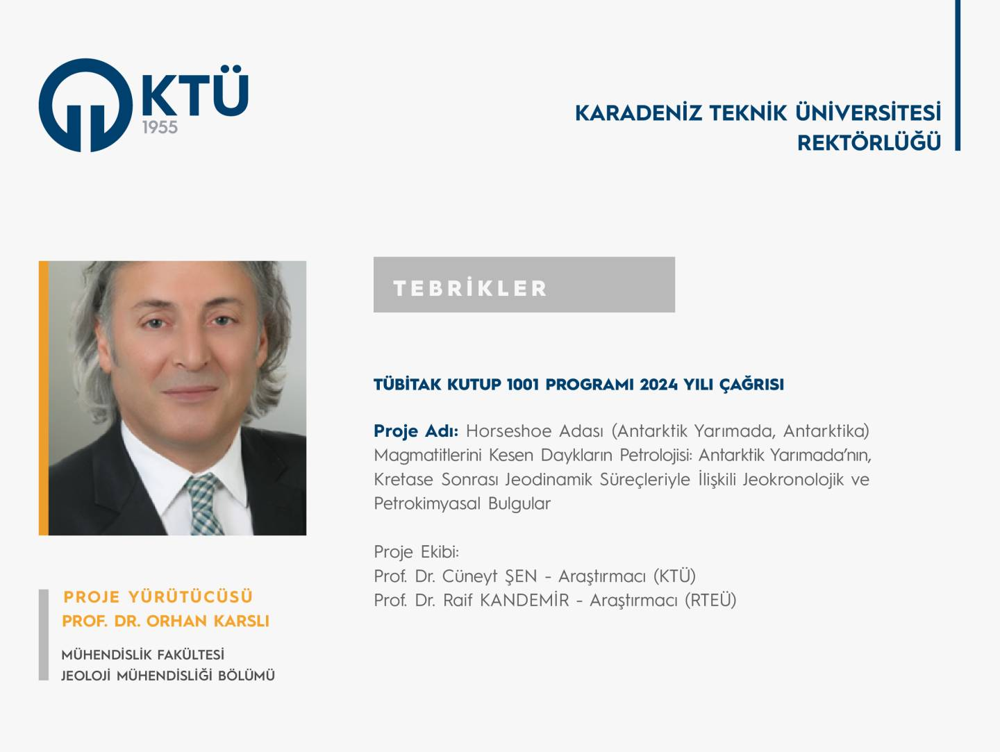
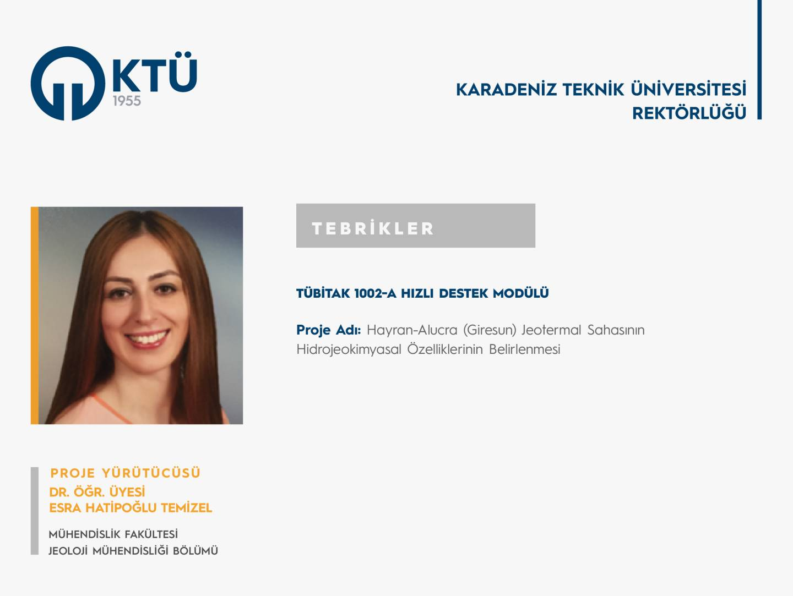
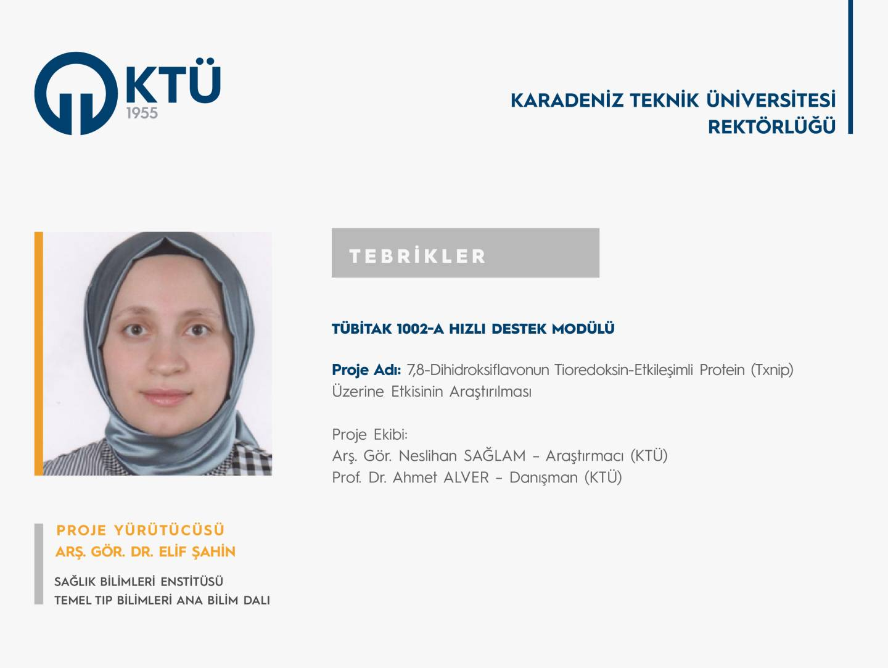
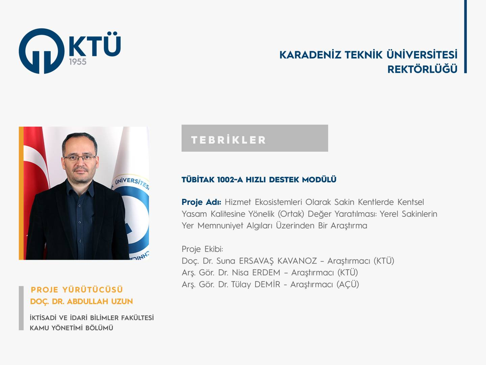
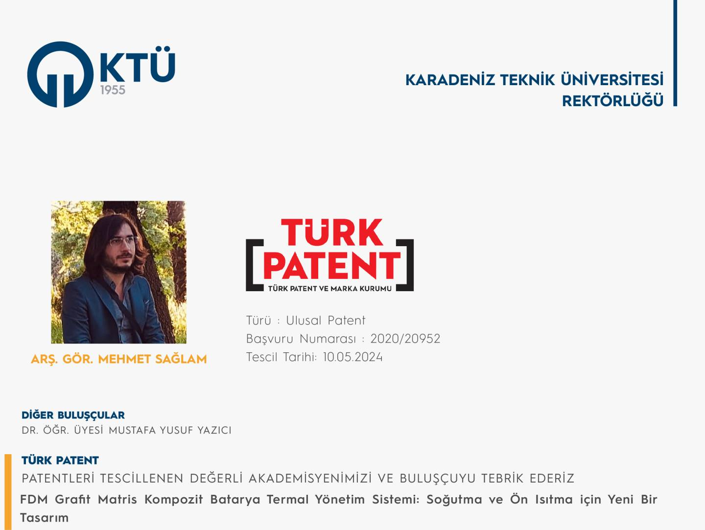